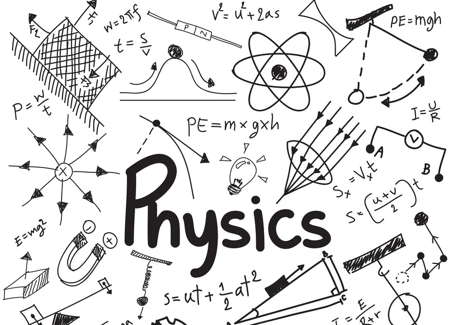

For me, physics is more than just a subject, it is a way of thinking, a way of living. What captivates me about it is that, from pure logic and reasoning alone, it allows us to understand what is going on in the world around us, from the very small to the very large.
Mathematics is the language in which sciences like physics and astrophysics are expressed. What amazes me about math is that once a theorem is proved, it stays. Forever. No matter if you are here on Earth in 2020 or in a faraway galaxy a million light-years away, mathematical laws still hold.
When I first learned about the true size of the universe we live in, I was gobsmacked. How can it be that Earth and our solar system and even our galaxy represent such a small part of the universe? That is what initially drew me toward astrophysics: it is a science that goes extremely beyond the mundane.